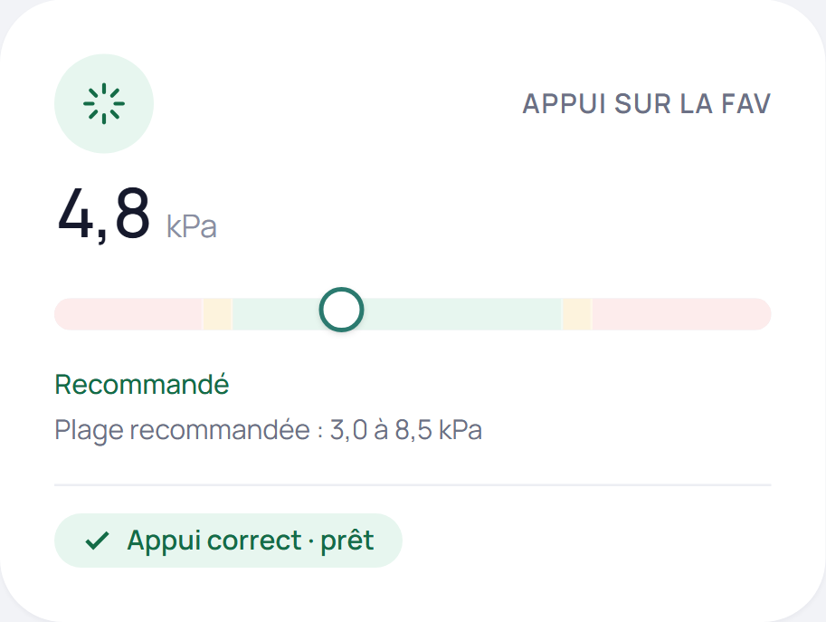
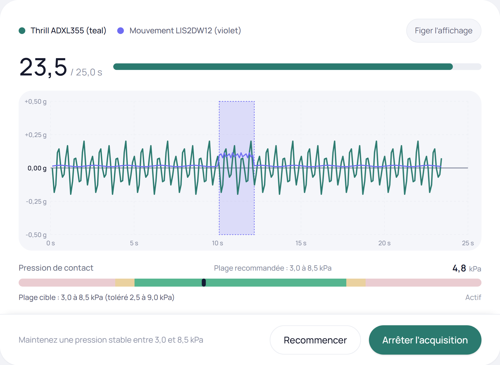
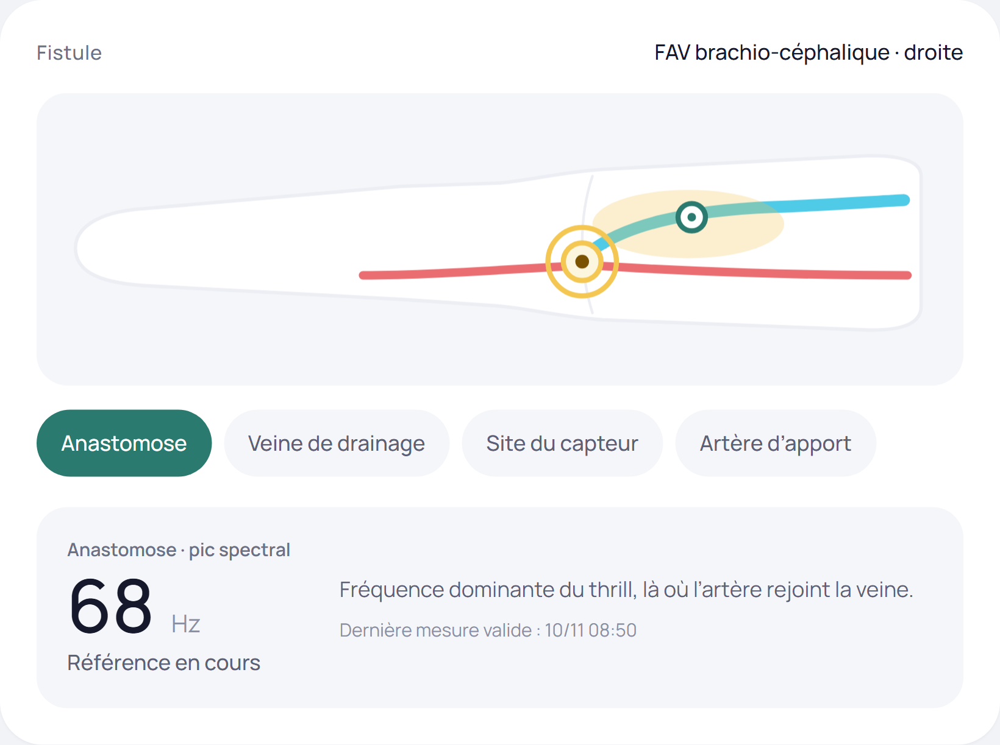
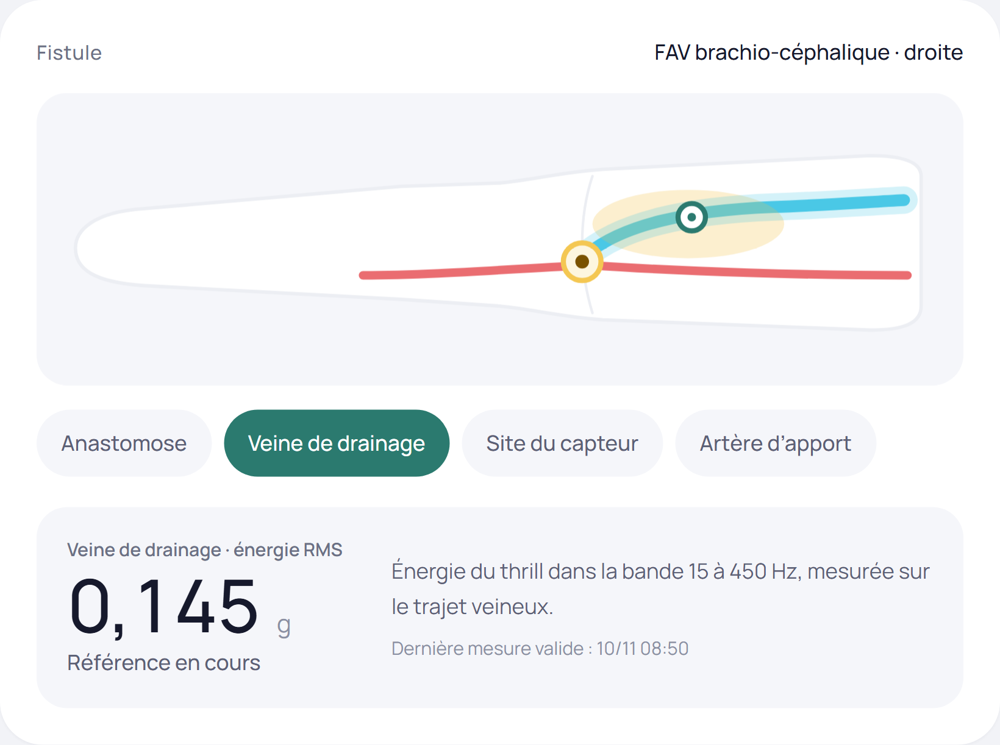
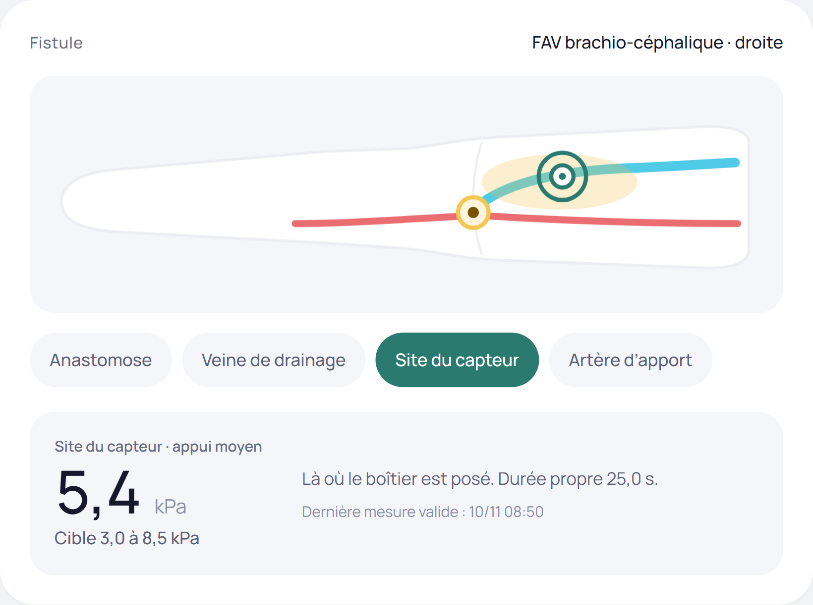
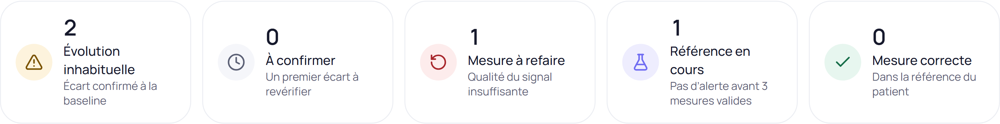

Un capteur posé sur la fistule.
Vingt-cinq secondes de mesure.

Appui entre 3,0 et 8,5 kPa.
Hors plage, le départ est bloqué.

25 secondes de signal.
Les secondes agitées sont écartées.
Moins de 12 s propres : mesure refaite.



Chaque zone se lit contre la référence du patient.

Aucune alerte avant trois mesures valides.
Données simulées. Prototype universitaire.
Aide à la décision uniquement :
la décision d’un examen écho-Doppler reste médicale.